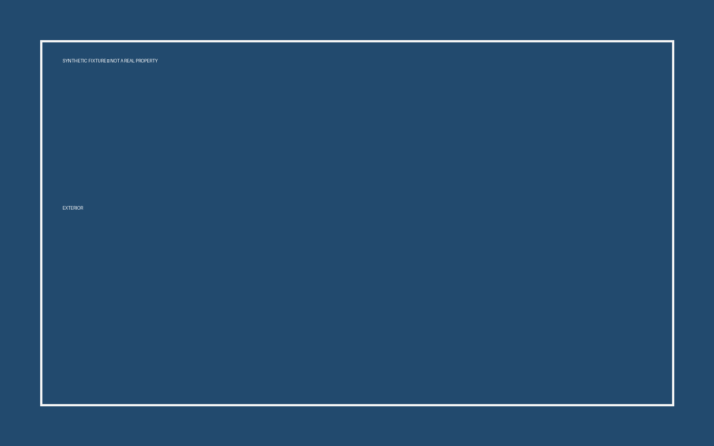
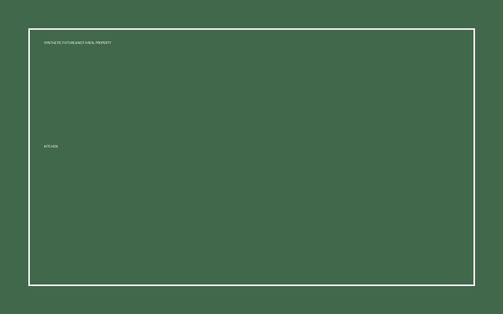
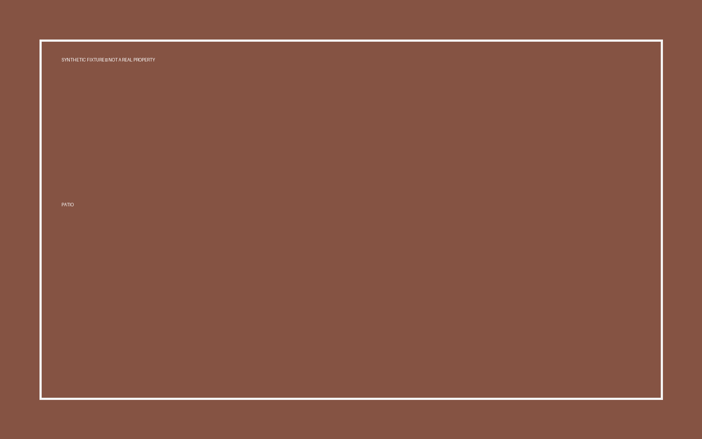

SYZYGY / CREATIVE FABRIC
Turn source
into signal.
into signal.
A reusable creative run for property films, websites, presentations, and whatever the next brief demands.



HyperFrames keeps the project editable: scenes, timing, media, and approved variables stay inspectable instead of collapsing into a black-box export.